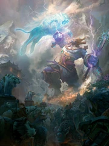
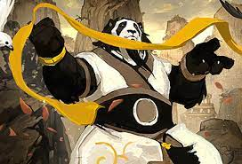
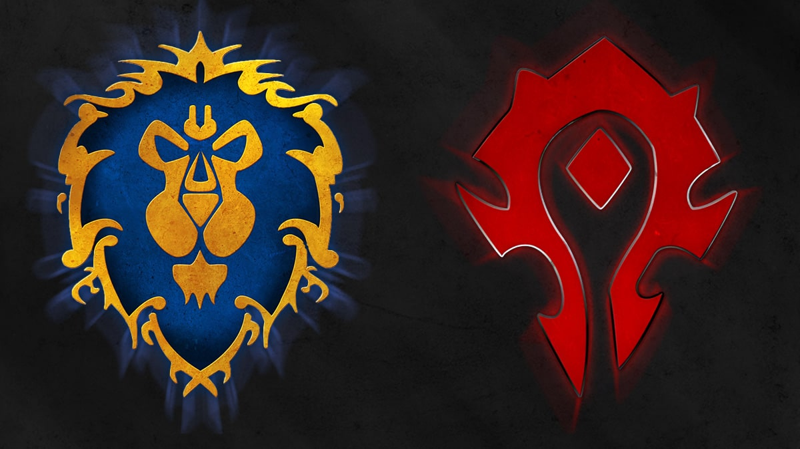
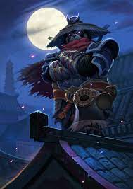

Esclavitud con los Mogu:
Los Pandaren vivieron inicialmente en la isla Pandaria, donde fueron subyugados y esclavizados por los Mogu, una raza de gigantes de piedra. Durante siglos, los Pandaren sufrieron bajo el yugo de los Mogu, siendo forzados a trabajar como esclavos en condiciones difíciles. Sin embargo, los Pandaren finalmente se rebelaron contra sus opresores en un conflicto conocido como la Revuelta Pandaren. Bajo el liderazgo de Liu Lang, un héroe Pandaren, lograron liberarse de la esclavitud Mogu.
Velo de niebla mística:
Después de la revuelta, los Pandaren decidieron proteger su hogar de la guerra y los conflictos externos. Utilizando técnicas místicas, los Pandaren envolvieron la isla en un velo de niebla que la ocultó del resto del mundo. Este velo de niebla mantenía a Pandaria invisible para las facciones de la Horda y la Alianza, que no descubrieron la existencia de la isla durante mucho tiempo.
Encuentro con la Horda y la Alianza:
El velo de niebla se levantó en la expansión "Mists of Pandaria", cuando la guerra entre la Horda y la Alianza llegó a las costas de Pandaria de manera inesperada. Los Pandaren, inicialmente neutrales, se vieron obligados a lidiar con la llegada de forasteros y la consiguiente amenaza para su tierra. Los jugadores de World of Warcraft experimentaron esta historia al elegir lados y embarcarse en una serie de aventuras en Pandaria.
Desarrollo con la Horda y la Alianza:
Los Pandaren, al principio cautelosos, eventualmente se unieron tanto a la Horda como a la Alianza. Los jugadores Pandaren podían elegir su facción al salir de la zona inicial. A medida que la historia progresaba, los Pandaren ayudaban a sus respectivas facciones a lidiar con las amenazas en Pandaria, incluida la corrupción conocida como Sha, manifestaciones de emociones negativas. La trama involucraba la lucha contra antiguas criaturas corruptas, como el Sha de la Ira, la Desesperación y el Miedo. Los Pandaren trabajaban junto con la Horda y la Alianza para purificar la tierra y restaurar el equilibrio. Este proceso también involucraba a los líderes Pandaren, como Taran Zhu, quien desempeñó un papel clave en la defensa de Pandaria contra la invasión extranjera y la corrupción.